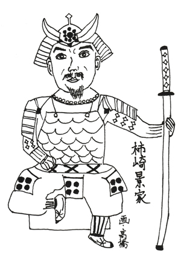

カゲイエが活躍した時代は、天下人も定まらぬ戦国時代から安土桃山時代…おおよそ1500年代の中期。越後(新潟県)の戦国大名、上杉謙信の家臣であり、柿崎城と猿毛(サルゲ)城のダブル城主でした。分かりやすく言うと、上杉建設の重役をやりつつ、自分でも柿崎ハウジングと猿毛土木を経営してた感じです。
柿ヤンはトークボックス四天王と呼ばれていますが(?)、カゲイエは上杉四天王と呼ばれていました。え? あとの3人は誰かって?お教えしましょう。前回登場した直江景綱(ナオエ・カゲツナ)と、宇佐美定満(ウサミ・サダミツ)、甘粕景持(アマカス・カゲモチ)です。サダミッちゃんとカゲモッちゃんの紹介は、またの機会にしましょう。今回の主役はカキザキ・カゲイエです。
とにかくカゲイエは戦に強く、上杉謙信のもとで突撃隊300騎の大将として大活躍しました。遠い子孫の柿ヤンは演奏中に居眠りをしちゃうけど、カゲイエは居眠りなんかすることなくガンガンに攻めて攻めて攻めまくって、第4回川中島の合戦では武田信玄の本隊を壊滅寸前にまで追い込んでいます。
さあ、ここで気になるワードが出て来ましたね。
「第4回川中島の合戦」です。
第4回レコード大賞とか、第4回ベスト・ジーニスト賞だったら分かります。んーと、第4回川中島の歌合戦でも分かるよね。でも、本物のセンソーなのに第4回って…。実は、川中島の合戦は5回もやっているんです。毎回、上杉謙信VS武田信玄のタイトル・マッチで、最初が1553年。最後が1564年。11年間に5回の定期イベント。久保田利伸の全国ツアーよりもマメであります(笑)。
しかし、こんなに頑張ったのに結果はいつも引き分け。その間にウマイこと立ち回った織田信長に、まんまと勢力を拡大されちゃうんですね。だから余計に、上杉サイドにとって第4回のカゲイエの活躍が賞賛され、かつ、ヒジョーに残念なのであります。
柿ヤンはトークボックス四天王と呼ばれていますが(?)、カゲイエは上杉四天王と呼ばれていました。え? あとの3人は誰かって?お教えしましょう。前回登場した直江景綱(ナオエ・カゲツナ)と、宇佐美定満(ウサミ・サダミツ)、甘粕景持(アマカス・カゲモチ)です。サダミッちゃんとカゲモッちゃんの紹介は、またの機会にしましょう。今回の主役はカキザキ・カゲイエです。
とにかくカゲイエは戦に強く、上杉謙信のもとで突撃隊300騎の大将として大活躍しました。遠い子孫の柿ヤンは演奏中に居眠りをしちゃうけど、カゲイエは居眠りなんかすることなくガンガンに攻めて攻めて攻めまくって、第4回川中島の合戦では武田信玄の本隊を壊滅寸前にまで追い込んでいます。
さあ、ここで気になるワードが出て来ましたね。
「第4回川中島の合戦」です。
第4回レコード大賞とか、第4回ベスト・ジーニスト賞だったら分かります。んーと、第4回川中島の歌合戦でも分かるよね。でも、本物のセンソーなのに第4回って…。実は、川中島の合戦は5回もやっているんです。毎回、上杉謙信VS武田信玄のタイトル・マッチで、最初が1553年。最後が1564年。11年間に5回の定期イベント。久保田利伸の全国ツアーよりもマメであります(笑)。
しかし、こんなに頑張ったのに結果はいつも引き分け。その間にウマイこと立ち回った織田信長に、まんまと勢力を拡大されちゃうんですね。だから余計に、上杉サイドにとって第4回のカゲイエの活躍が賞賛され、かつ、ヒジョーに残念なのであります。

カゲイエの才能は、腕力だけではありません。カゲイエは、上杉サイドと仲が悪かった北条氏康(ホウジョウ・ウジヤス)と仲良し同盟を結び、自分の実子、晴家(ハルイエ)を人質として北条家の小田原城へ送るなど、政治的フィクサーの手腕もあるのです。
このように、上杉謙信のもとで大活躍したカゲイエですが、上杉謙信その人の命令で、なんと死刑にされちゃうんです。カゲイエは織田信長のスパイだという噂を、謙信が信じたと言われていますが、本当のところは分からないままです。
ここで、なんたって流の大胆な仮説です。
上杉謙信が若い時、敵将の娘・伊勢姫(イセヒメ)に恋をしちゃったのです。まさに、戦国時代のロミオとジュリエット!しか〜し! 上杉家に忠誠を誓ったカゲイエは、敵の娘を愛する謙信を許しませんでした。頭に来たカゲイエは、ブログやメールで誹謗中傷…なんてことはしませんでしたが、とにかく2人を強引に別れさせたのです。なんたって戦国時代。恋愛よりも家督が大事なのです。
そして悲劇が起きます。心傷ついたイセヒメちゃんは出家し、とうとう自殺したのです。この出来事は、上杉謙信の心も深く傷つけたに違いありません。その時のカゲイエへの恨みが、もしかしたら、謙信のどこかにずっとくすぶっていたのでは…。カゲイエは信長のスパイでないと知りつつも、若き日の恨みを晴らす…考えれば考えるほど、ミステリーの世界に迷い込みます。
ちなみに謙信は、イセヒメちゃん以外の女性にも何度か恋をしましたが(したのかよっ!しかも何度も!?)、結婚はせず生涯独身を貫きました。
忠誠を尽したボスに死罪を告げられたカキザキ・カゲイエは、戦国時代の光と影を体現した武将だったのです。
さて次回は、今回のカキザキ・カゲイエが討ち倒した武田信玄の軍師、山本勘助(ヤマモト・カンスケ)を、なんたって流に紹介してみたいと思います。お楽しみに…している人がいるかどーか…!